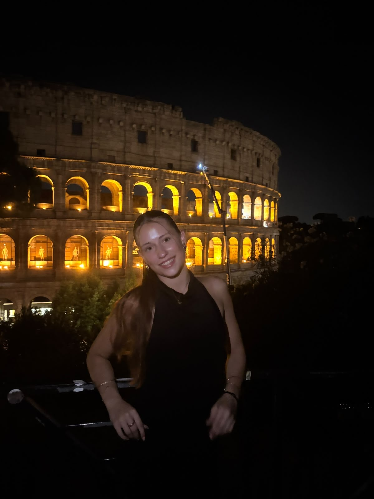
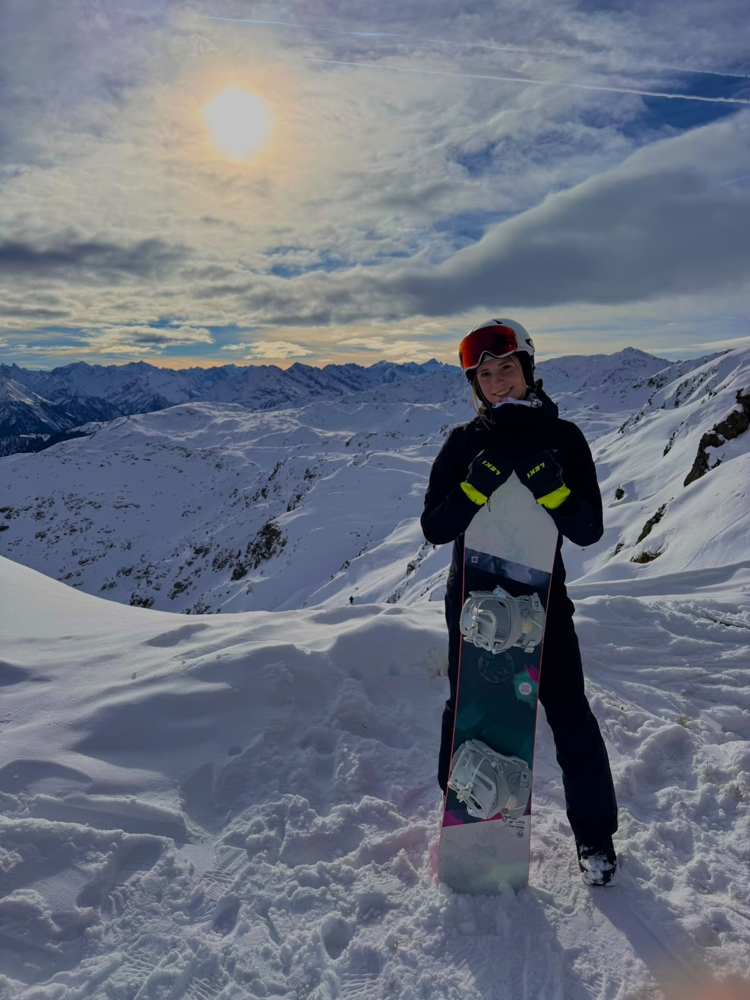

Die Menschen hinter Erlebnis Egerland
Luana
Hemming
17 Jahre · im Projektjahr 2026
Meine Aufgaben
- Social Media
Meine Motivation
Warum ich dabei bin
Als ich mich für das P-Seminar entschieden habe, hat mich vor allem die Möglichkeit angesprochen, Geschichte einmal außerhalb des Klassenzimmers zu erleben. Die Schicksale der Sudetendeutschen und die Spuren, die ihre Geschichte bis heute hinterlassen hat, finde ich besonders interessant. Ich wollte mehr darüber erfahren, was damals im Egerland passiert ist und welche Bedeutung diese Vergangenheit noch heute hat.
Während unserer Arbeit begeistert mich vor allem, wie vielfältig wir uns dem Thema nähern können. Ob bei unseren Erkundungen vor Ort, durch Gespräche oder beim Sammeln von Informationen – jeder neue Eindruck eröffnet eine andere Sichtweise. Besonders die persönlichen Begegnungen machen unser Projekt für mich zu etwas Besonderem.
Auch die gemeinsame Arbeit an unserem Film macht mir viel Spaß. Es ist schön zu sehen, wie aus einzelnen Ideen und gesammelten Eindrücken ein gemeinsames Ergebnis entsteht. Ich hoffe, dass wir mit unserem Projekt die Geschichte der Sudetendeutschen ein Stück näherbringen und zeigen können, warum es wichtig ist, sich auch heute noch mit ihr auseinanderzusetzen.
